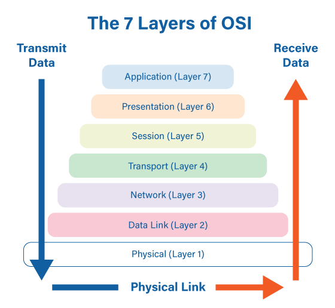
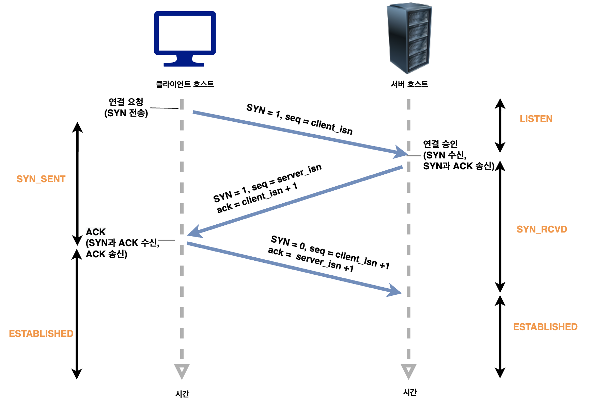

프로토콜 관련 용어
프로토콜
컴퓨터와 컴퓨터가 통신할 때 소프트웨어 또는 하드웨어가 실행할 절차, 규약
프로토콜은 통신과정의 절차와 규칙의 기술이다.
프로토콜은 계층 모델에 따라 분류할 수 있다.
인터넷 프로토콜 IP (Internet Protocol)
IP의 정보는 패킷 혹은 데이터그램이라고 하는 덩어리로 나뉘어 전송된다.
IP에서는 이전에 통신한 적 없는 호스트에 패킷을 보낼 때 경로 설정이 필요없다.
OSI참조모델 : 프로토콜을 7계층으로 분류
전체 네트워크 시스템을 7개의 기능 계층으로 세분화하고 각 계층이 정형화 된 기능을 수행하도록 구성

- 1계층: 물리 계층
- - 데이터를 물리 매체 상으로 전송하는 역할
- - 물리적 링크의 설정, 유지, 해제 담당
- - 전송선으로의 종류에 따른 전송 방식 결정
- 2계층: 데이터링크 계층
- - 물리 계층에서 전송하는 비트들에 대한 동기 및 식별 기능
- - 원활한 데이터의 전송을 위한 흐름제어(Flow Control)
- - 안전한 데이터 전송을 위한 오류제어(Error Control)
- 3계층: 네트워크 계층
- - 송신측과 수신측간의 논리적 링크 설정
- 4계층: 전송계층
- - 전송 계층을 기점으로 네트워크 서비스와 상위 사용자 서비스 구분됨.
- - 전체 메세지의 종단간 전달, 흐름 제어 및 오류 제어 기능
- 5계층: 세션 계층
- - 송수신 프로세스 사이의 세션의 확립 및 유지, 종료 담당
- - 반이중 대화, 전이중 대화의 설정 및 동기화 유지
- 6계층: 표현 계층
- - 전송 데이터의 구문과 의미에 대한 처리를 담당
- - 통신을 위해 네트워크 표준 형식으로 데이터 변환
- 7계층: 응용 계층
- - 응용 프로세스에게 네트워크 접근 수단 제공
전송 제어 프로토콜 TCP (Transmission Control Protocol)

TCP는 근거리 통신망이나 인트라넷, 인터넷에 연결된 컴퓨터에서 실행되는 프로그램 간에
일련의 옥텟을 안정적으로, 순서대로, 에러없이 교환할 수 있게 한다.
전송계층에 위치하며 네트워크의 정보 전달을 통제하는 프로토콜이자 인터넷을 이루는 핵심 프로토콜의 하나다.
TCP는 웹 브라우저들이 월드 와이드 웹에서 서버에 연결할 때 사용되며, 이메일 전송이나 파일 전송에도 사용된다.
이더넷 (Ethernet)
컴퓨터 네트워크 기술의 하나로, 일반적으로 LAN, MAN 및 WAN에서 가장 많이 활용되는 기술 규격이다.
이더넷은 OSI 모델의 물리 계층에서 신호와 배선, 데이터 링크 계층에서 MAC 패킷과 프로토콜의 형식을 정의한다.
광역 통신망 WAN (wide area network)
드넓은 지리적 거리/장소를 넘나드는 통신 네트워크 또는 컴퓨터 네트워크이다.
광역 통신망은 근거리 통신망 유저들이 다른 지역에 있는 근거리 통신망 사용자들과 데이터 통신을 할 수 있도록 해 준다.